Participant 1
Initial description: The background color is the color of the grid with the fewest filled in squares. Line up the larger squares with the smaller squares to form the shapes.
Final description: Set height of the grid to the height of one of the two grids. Set the width to the width of either of the two grids. Set the background color to the color of the grid containing the smallest number of filled in squares. Line up the shape of the bigger shapes with that of the smaller shape and fill in with the colors of the bigger shapes.
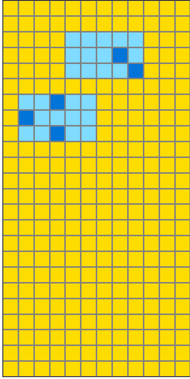

Participant 2
Initial description: The half of the grid with the individual blocks is copied to the output. Then, the surrounding blocks from the other half of the grid are matched up to it.
Final description: The half of the grid with the individual blocks is copied to the output. Then, the surrounding blocks from the other half of the grid are matched up to it.

Participant 3
Initial description: The dots are anchors for the more complex shapes.
Final description: The dots are anchors for the more complex shapes. The background comes from the panel with the dots.
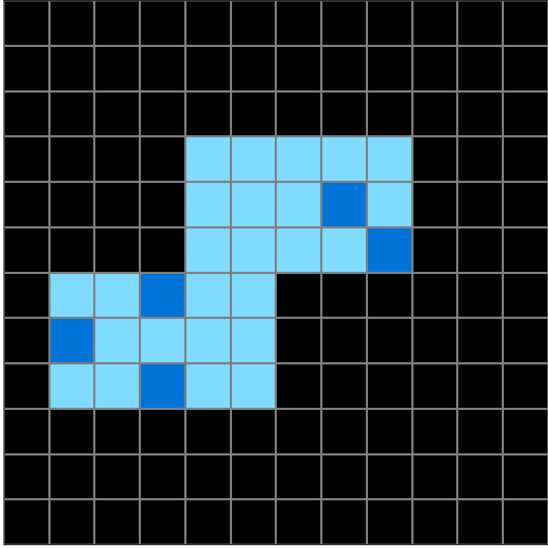
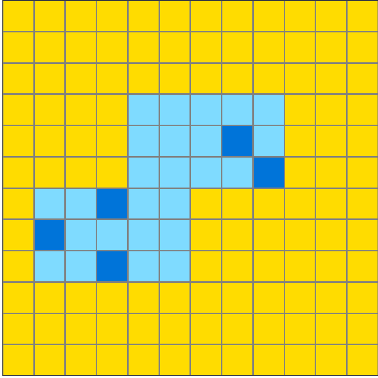

Participant 4
Initial description: I thought the rule was to make the grid the color of the bottom part of the input. Also to put the single dots from the top input in the same space on the grid in the test output and fill around them with the color of the boxes in the bottom test input.
Final description: The color of the grid needed to match the color of the side that didn't have shaded in boxes. The individual dots needed to be in the same location as the test input and then shaded around them with light blue in the same way as shown in the red part of the test input.


Participant 5
Initial description: I think the rule to transform the input was to convert one set of images onto the next grid using the colored blocks provided.
Final description: I think the rule to transform the input was to convert one set of images onto the next grid using the colored blocks provided.

Participant 6
Initial description: Copy the half of the grid that has single cells with no background and add the rectangle backgrounds to them that are shown in the other half of the grid.
Final description: Copy the half of the grid that has single cells with no background and add the rectangle backgrounds to them that are shown in the other half of the grid.

Participant 7
Initial description: I used the top section as guidance for where the completed boxes should be placed. I then duplicated the two boxes that had the corresponding dark blue patterns.
Final description: First I resized the grid to match the input size. I then used the single colored blocks as reference for where to place the multi-colored sections. I then copied the pattern for the multi-colored sections. I also made sure to change the background color to match the reference grid.
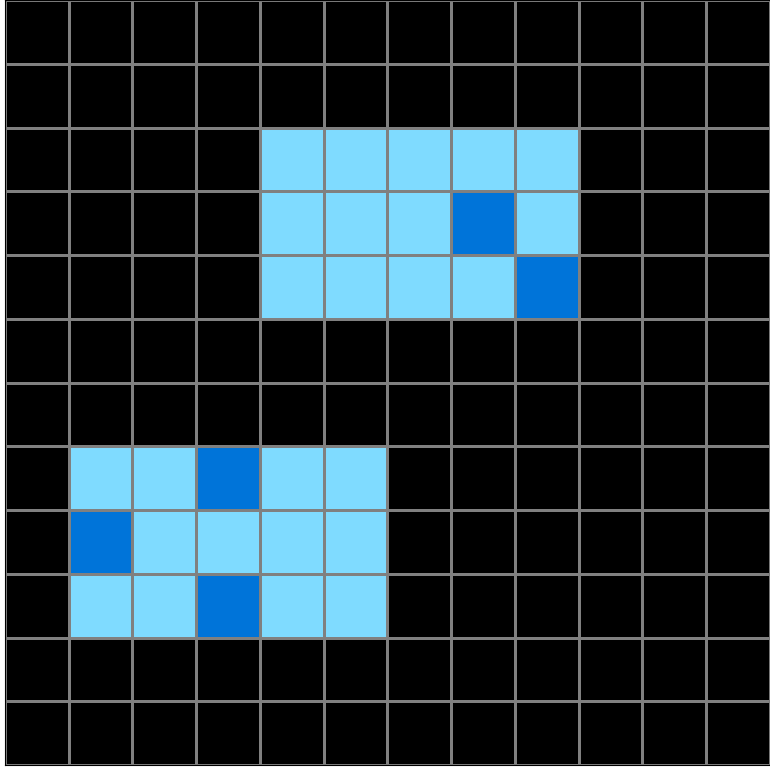
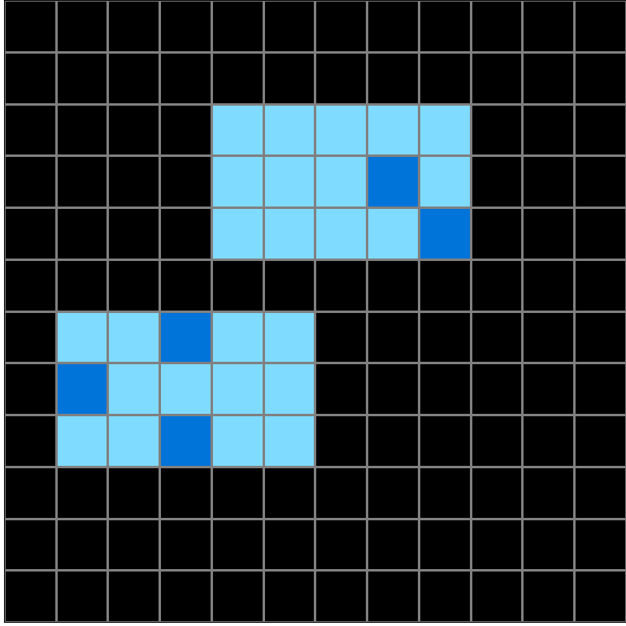

Participant 8
Initial description: To match the light blue shapes to the blue square pattern
Final description: To fill around the blue squares in the top with the light blue shapes shown in the bottom example and fill in background color with yellow.


Participant 9
Initial description: Each input is transformed by a machine that applies a hidden rule to produce a corresponding output.
Final description: Each input is transformed by a machine that applies a hidden rule to produce a corresponding output.
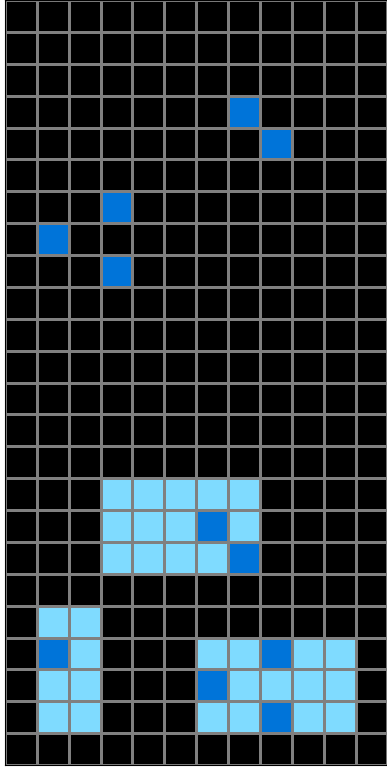


Participant 10
Initial description: The smaller portion is saved and the blocks around the colored blocks are colored.
Final description: The color with single blocks was kept and colors were changed around the differently colored blocks.
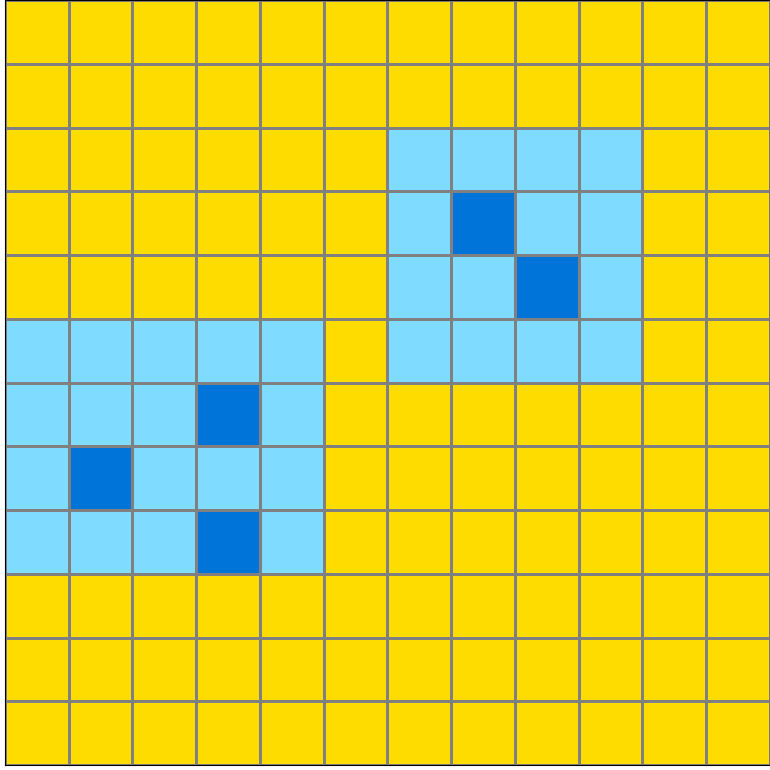
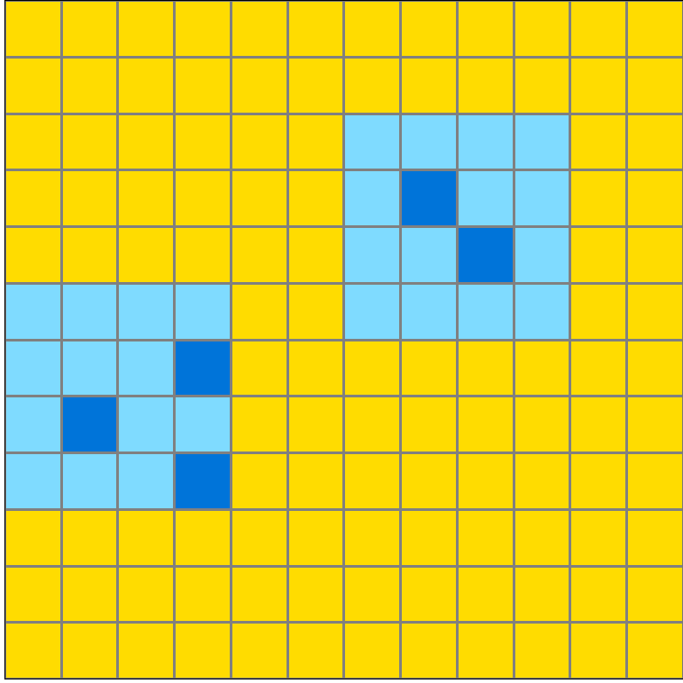
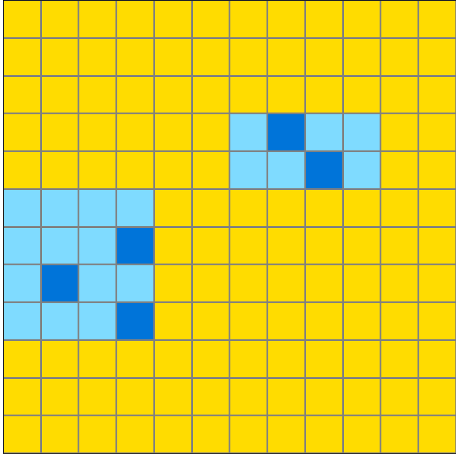
Participant 11
Initial description: I messed this one up but I will explain the correct answer in my next guess.
Final description: The dark blue dots in the original represent the shapes that will eventually be copied. The output is one of the two squares in the test, the one that only has the dots. In this case that is the yellow background. Then the shapes in the other input square are related to the blue dots. Any blue dots on the "dot only" square will be related to the light blue rectangle in the other square, and copied onto the output. So any rectangles without dots represented will, consequently, not be copied into the output.
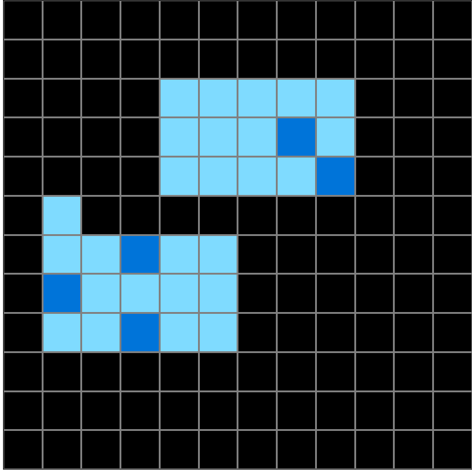
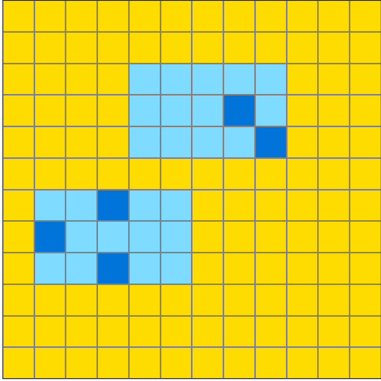
Participant 12
Initial description: Okay for the grid size you need to take the size of the grid that has the single dots and then one monochrome color so for this test output it would be 12x12. Now where the single dots appear you need to see the pattern in the other grid and copy the light blue dots and have them correspond to where the dark blue dots appear. The background is the monochrome color, in this case, yellow.
Final description: Okay for the grid size you need to take the size of the grid that has the single dots and then one monochrome color so for this test output it would be 12x12. Now where the single dots appear you need to see the pattern in the other grid and copy the light blue dots and have them correspond to where the dark blue dots appear. The background is the monochrome color, in this case, yellow.

Participant 13
Initial description: The output's dimensions are the same as the input half that does not contain larger rectangular regions that enclose the smallest tiles. The background color and smallest individual tiles used are also copied from the half of the input that does not have the rectangular regions enclosing the smallest tiles. The rectangular regions on the output comes from getting the rectangular enclosing tiles from the input and enclosing them around the smallest tiles on the opposite half to where the resulting rectangular enclosures are congruent in shape and pattern (not necessarily position) to the half with the enclosures.
Final description: The output's dimensions are the same as the input half that does not contain larger rectangular regions that enclose the smallest tiles. The background color and smallest individual tiles used are also copied from the half of the input that does not have the rectangular regions enclosing the smallest tiles. The rectangular regions on the output comes from getting the rectangular enclosing tiles from the input and enclosing them around the smallest tiles on the opposite half to where the resulting rectangular enclosures are congruent in shape and pattern (not necessarily position) to the half with the enclosures.

Participant 14
Initial description: I followed the task demonstration provided.
Final description: I followed the task demonstration provided.

Participant 15
Initial description: Honestly I'm not sure about this one.
Final description: Make a yellow grid with 12x12 squares and put a light blue box around the corresponding patterns which are dark blue dots.
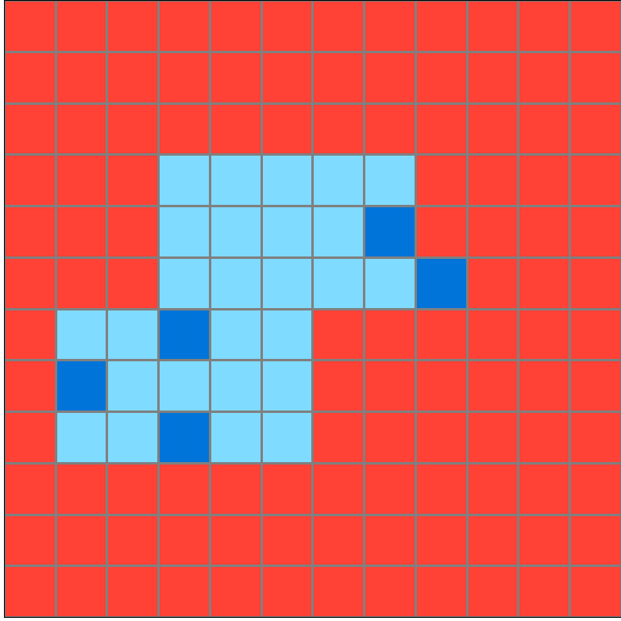
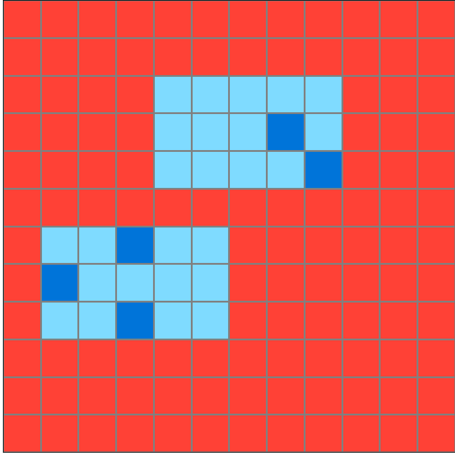